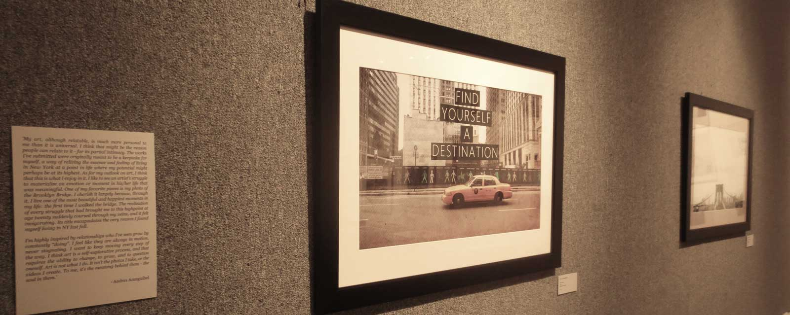

PRESENCE:
I've always stood by the idea that we as designers have the power to better our industry by being involved in our local community. The more ideas we can share with - and pick up from - others, the faster we can allow design to grow. Users of everyday products and software depend on innovative and effective usability, as well as appropriate aesthetic. We can only achieve those goals through collaboration and exploration.
As I get increasingly involved in the Orlando design and development scene, I feel constantly more aware of the trends and best practices around me. This is something that I plan on continuing to do throughout the development of my career as a graphic designer, web/ux developer, and video editor/motion graphics artist.
As I get increasingly involved in the Orlando design and development scene, I feel constantly more aware of the trends and best practices around me. This is something that I plan on continuing to do throughout the development of my career as a graphic designer, web/ux developer, and video editor/motion graphics artist.
UCF COMMUNITY:
President
2013 - 2014
Responsible for contacting and bringing community design presence to club meetings, in the form of local artists, designers, and developers.
Also, in collaboration with officer team, responsible for the planning and executing of the following major club events:
- Bi-monthly member networking/social event
- Monthly art sales
- Weekly tutoring and design talks
- Yearly Senior BFA gallery exhibit
- Yearly art/design conference trip
2013 - 2014
Responsible for contacting and bringing community design presence to club meetings, in the form of local artists, designers, and developers.
Also, in collaboration with officer team, responsible for the planning and executing of the following major club events:
- Bi-monthly member networking/social event
- Monthly art sales
- Weekly tutoring and design talks
- Yearly Senior BFA gallery exhibit
- Yearly art/design conference trip
Co-Founder, Director
2014
Responsible for creating all marketing materials, organizing leadership team, setting up location, overseeing program content.
In collaboration with leadership team, responsible for the planning and executing of the following:
- Bi-weekly demos & tutorials
- Q&A sessions
- Speaker events
2014
Responsible for creating all marketing materials, organizing leadership team, setting up location, overseeing program content.
In collaboration with leadership team, responsible for the planning and executing of the following:
- Bi-weekly demos & tutorials
- Q&A sessions
- Speaker events
Co-Host
2013 - 2014
Monthly event for students to network with peers who are working hard to turn their ideas for businesses into a reality. This is an event that strives to foster creativity and collaboration. Starter MeetUps are about ideas. Finding them, developing them and most importantly starting them.
In collaboration with officer team, responsible for the planning of the following:
- Monthly member networking/social event
- Providing graphic/web design resources
- Marketing materials and advertising at other organizations
2013 - 2014
Monthly event for students to network with peers who are working hard to turn their ideas for businesses into a reality. This is an event that strives to foster creativity and collaboration. Starter MeetUps are about ideas. Finding them, developing them and most importantly starting them.
In collaboration with officer team, responsible for the planning of the following:
- Monthly member networking/social event
- Providing graphic/web design resources
- Marketing materials and advertising at other organizations
ART COMMUNITY:

Introspective (Juried Exhibit); May-July, 2013→
Gallery 500 - 4000 Central Florida Blvd, Orlando, FL 32816
Photography
Works showcased: 2
Gallery 500 - 4000 Central Florida Blvd, Orlando, FL 32816
Photography
Works showcased: 2
Pieces:
1. To Take a Full Breath of Life→
2. Find Yourself a Destination→
Artist Statement:
My art, although relatable, is much more personal to me than it is universal. I think that might be the reason people can relate to it - for its partial intimacy. The works I've submitted were originally meant to be a keepsake for myself, a way of reliving the essence and feeling of living in New York at a point in life where my potential might perhaps be at its highest. As for my outlook on art, I think that this is what I enjoy in it. I like to see an artist's struggle to materialize an emotion or moment in his/her life that was meaningful. One of my favorite pieces is my photo of the Brooklyn Bridge. I cherish it largely because, through it, I live one of the most beautiful and happiest moments in my life: the first time I walked the bridge. The realization of every struggle that had brought me to this highpoint at age twenty suddenly coursed through my veins, and it felt invigorating. Its title encapsulates the very reason I found myself living in NY last fall.
I'm highly inspired by relationships who I've seen grow by constantly "doing". I feel like they are always in motion, never stagnating. I want to keep moving every step of the way. I think art is a self-explorative process, and that requires the ability to change, to grow, and to question oneself. Art is not what I do. It isn't the photos I take, or the videos I create. To me, it's the meaning behind them - the soul in them.
1. To Take a Full Breath of Life→
2. Find Yourself a Destination→
Artist Statement:
My art, although relatable, is much more personal to me than it is universal. I think that might be the reason people can relate to it - for its partial intimacy. The works I've submitted were originally meant to be a keepsake for myself, a way of reliving the essence and feeling of living in New York at a point in life where my potential might perhaps be at its highest. As for my outlook on art, I think that this is what I enjoy in it. I like to see an artist's struggle to materialize an emotion or moment in his/her life that was meaningful. One of my favorite pieces is my photo of the Brooklyn Bridge. I cherish it largely because, through it, I live one of the most beautiful and happiest moments in my life: the first time I walked the bridge. The realization of every struggle that had brought me to this highpoint at age twenty suddenly coursed through my veins, and it felt invigorating. Its title encapsulates the very reason I found myself living in NY last fall.
I'm highly inspired by relationships who I've seen grow by constantly "doing". I feel like they are always in motion, never stagnating. I want to keep moving every step of the way. I think art is a self-explorative process, and that requires the ability to change, to grow, and to question oneself. Art is not what I do. It isn't the photos I take, or the videos I create. To me, it's the meaning behind them - the soul in them.
TECH COMMUNITY & SOCIAL:
I'm an active member of:
Find me on: